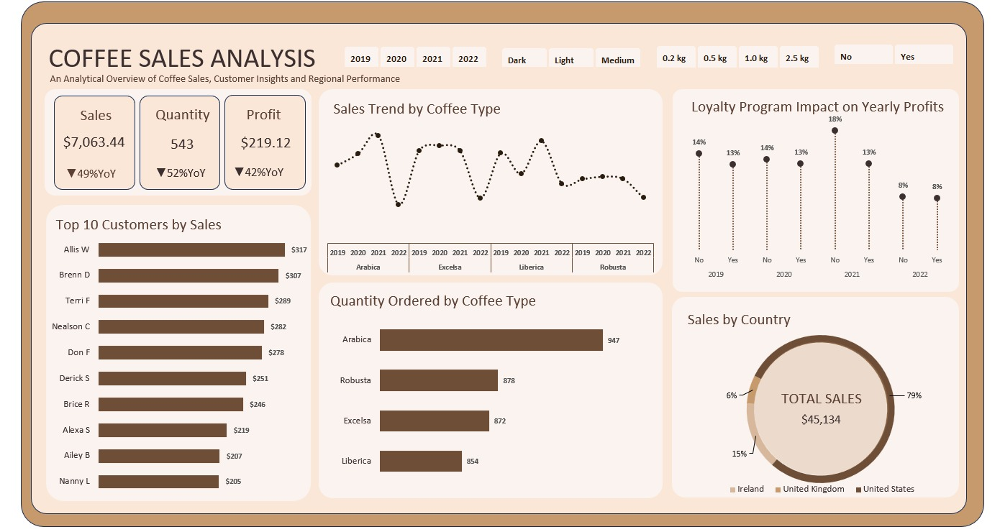
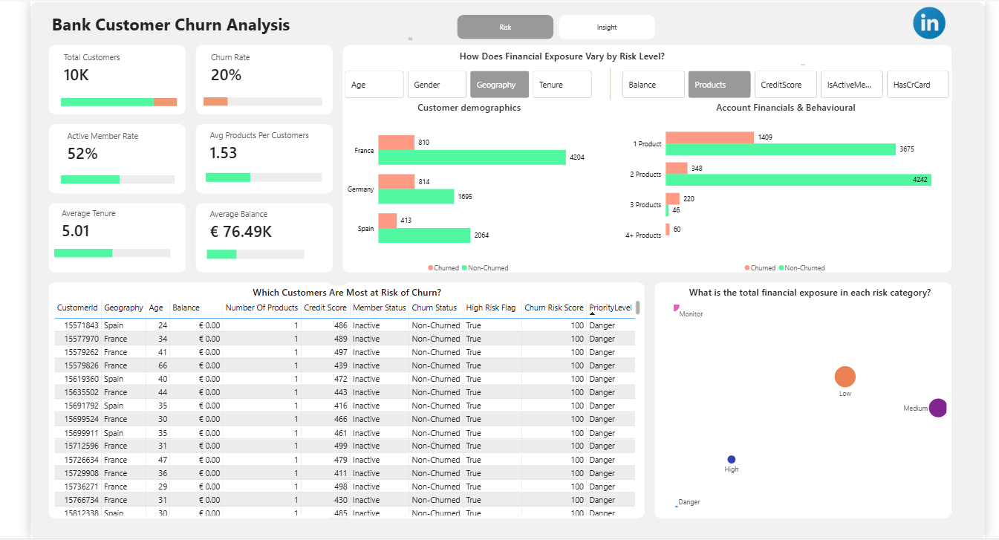

Hello, my name is Odunlami Zainab
I'm a Data Analyst
IBM Certified Data Analyst & Business Intelligence Professional turning data into actionable insights. Skilled in Excel, SQL, and Power BI. Focused on building dreams through data....
Download CV
About Me
Odunlami Zainab | Data Analyst
I am a recent MBA graduate from Multimedia University with a comprehensive IBM Data Analyst certification, and I am excited about the opportunity to contribute to data-driven decision-making initiatives. What particularly draws me to data analytics is commitment to leveraging analytics for strategic business growth, and I am confident that my unique combination of business acumen and technical expertise would make me a valuable addition to whatever project I work on.
Throughout my intensive analytics training and recent MBA program, I have demonstrated solid proficiency in SQL, Excel and Power BI for complex data analysis and visualisation. My capstone projects have included identifying a critical 49% year-over-year revenue decline through comprehensive sales analysis and developing workforce optimisation strategies using SQL-driven analytics. I possess excellent project management and analytical thinking skills, which have enabled me to successfully balance rigorous academic coursework, professional certification programs, and hands-on data analytics training simultaneously.
My current internship with Intern Pulse has provided valuable opportunities to apply advanced analytics in real world business scenarios. I have led cross-functional teams in sprint-based analytics projects, developed interactive dashboards for executive reporting, and presented data-driven insights to senior leadership. My background in accounting and finance, combined with my MBA education, allows me to understand the business context behind the data and translate complex analytical findings into actionable strategic recommendations. I am confident that I can leverage these skills, along with my IBM certification and practical experience, to help drive innovative data solutions for your organisation.
Birthday: 19 may 1999
Age: 27
Linkedln: https://www.linkedin.com/in/odzainab/
Email: odzainab1@gmail.com
Degree: Masters In Business Administration
Phone: +60 115 119 0227
City: Kuala Lumpur, Malaysia
Freelance: Available
Excel
SQL
Power BI
Data Cleaning & Visualization
Education
2025
Data Analytics Professional Certificate
During my 5-month Data Analytics course with Digitaley Drive, I gained hands-on experience in using key tools and techniques. I mastered SQL for managing and querying large datasets, developed expertise in data cleaning to ensure accuracy, and learned how to create interactive reports with Power BI. Additionally, I gained foundational knowledge in Python for data analysis and improved my ability to make data-driven decisions through statistical analysis and problem-solving techniques.
2021-2025
MBA (Management)
Developed a strong foundation in leadership, strategy, and business operations. My coursework focused on business analysis, decision-making, and organizational management, helping me build a well-rounded skill set for tackling complex business challenges. Having earned First class grade,this education has enhanced my ability to analyze data from a strategic perspective and make data-driven decisions that contribute to business success.
2018 - 2021
Degree in Accounting, Banking and Finance
With a Second Class grade, my degree has provided me with a strong foundation in financial principles, accounting practices, and banking operations. I developed skills in financial analysis, budgeting, and risk management, which contribute to my ability to analyze financial data and support data-driven decision-making.
Experience
2025 - 2025
Data Analyst (Intern) Intern Pulse, Remote
Collaborated with cross-functional teams in 2-week sprint cycles to deliver actionable data analysis and business insights.
Prepared and presented stakeholder reports highlighting ROI projections, KPIs and performance metrics, supporting data-driven decision-making.
Transformed raw business datasets using ETL (data extraction, cleaning, transformation, and preparation) processes in Excel, Power BI, and SQL for reporting requirements.
Built interactive dashboards to monitor customer acquisition costs, conversion rates, revenue performance, and other key metrics, applying data visualization best practices.
Applied analytical techniques including predictive modeling concepts, trend analysis, customer lifetime value (CLV) estimation, and market segmentation during analytics projects and coursework.
2017 - 2018
Customer Service Representative
Escalated complex issues appropriately while maintaining professional tone and customer confidence.
Supported team targets by adapting quickly to rotating shifts, workload changes, and customer demands.
Handled 20+ daily inbound and outbound customer inquiries while meeting service quality expectations.
Accurately documented customer interactions and resolutions with over 95% record completion accuracy.
Clarified customer needs through effective questioning to support first-contact resolution and satisfaction.
Listened actively to customer concerns, showed empathy, and built rapport during high-volume interactions.
Maintained working knowledge of company products and services to deliver consistent, accurate information.
Followed scripts, procedures, and quality standards to meet contractual performance indicators consistently.
Services
Defining Objectives
I collaborate with you to thoroughly understand your business objectives and key questions,ensuring that my data analysis aligns with your specific needs and provides valuable insights that drive decision-making.
Data Collection
I gather high-quality data from diverse sources, including databases, surveys, and other systems, ensuring that the data I collect is actionable and aligned with your business goals building a strong foundation for data-driven decisions.
Data Cleaning
I transform raw, messy data into clean, structured datasets that are accurate and ready for analysis. This service ensures that your data is free from inconsistencies, errors, and outliers, allowing you to trust the insights derived from it.
Data Analysis
I analyze your data to reveal trends and insights, helping you optimize customer segmentation, pricing strategies, and identify cost-saving opportunities, providing data-driven recommendations to improve business operations.
Data Visualization
I design interactive dashboards and visualizations using Power BI and Excel,transforming complex datasets into clear, easy-to-understand visual stories that highlight key trends and insights, helping you make informed decisions.
Recommendation & Communication
After analyzing your data, I provide actionable recommendations aligned with your objectives. I present key findings through clear reports or presentations, ensuring insights are easily understood, so your team can act quickly and effectively.
Portfolio
My Projects :

EXCEL ANALYTICS PORTFOLIO
→ Explore Excel Projects
.png)
POWER BI ANALYTICS PORTFOLIO
→ Explore Power BI Projects

SQL ANALYTICS PORTFOLIO